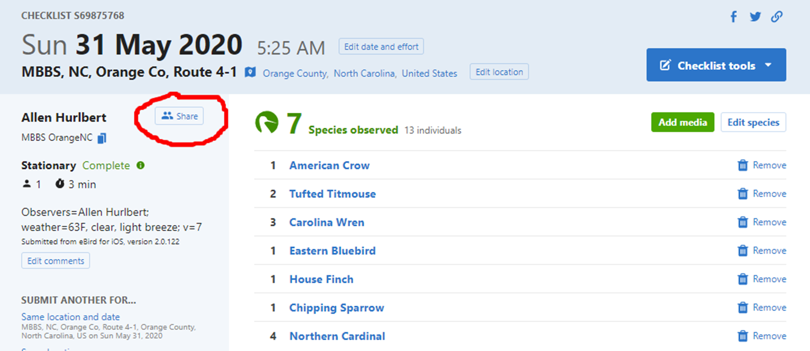
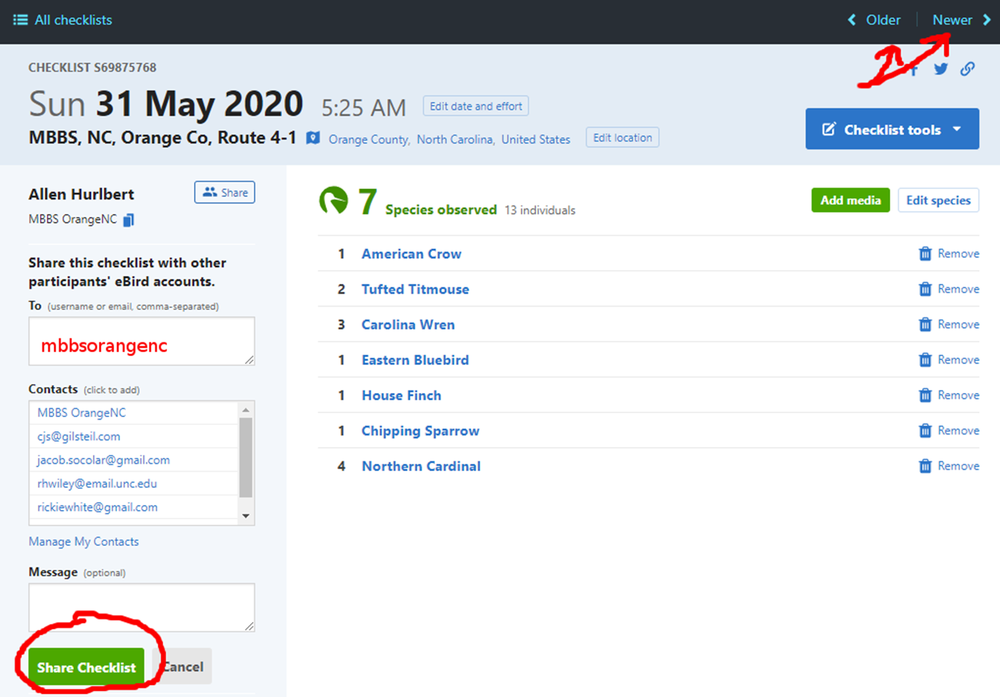

Pick a day for your count between May 15 and June 30; a
Sunday morning is a good time because there is little traffic then.
Arrive at the starting point in time to start your first count
exactly 30 minutes before sunrise (about 5:30 EDT for our area in early
June).
Drive exactly 0.5 miles between counts by the odometer in your
car.
If it is unsafe to stop at the 0.5-mile mark (or the 0.5-mile mark
falls on a numbered highway) continue to the first place on your route
where it is safe to stop (for the next count, proceed 0.5 miles from
this adjusted position).
Continue until you have made 20 stops (9.5 miles if all intervals
are 0.5 miles).
Performing a count
Watch a video demonstration to see a checklist in action:
For each stop along your survey route, submit an eBird checklist
of birds seen or heard during your 3 minute period using the eBird
mobile app.
For Stop 1 only, enter information about
observers and weather (and optionally,
overall survey notes) for the survey as a whole. Also
enter information about vehicles and
habitat, as in the following example:
“observers=Allen Hurlbert, Sarah Pollack; weather=55 F, clear;
notes=big thunderstorm last night, everything wet; used Merlin Sound ID
for confirmation; vehicles=3; habitat=B,H”
These comments must be formatted in this very specific
way in order for us to easily extract this information later.
Please make sure you use these conventions:
Separate the different types of information (observers;
weather; vehicles; etc.) with a semi-colon,
and only use a semi-colon for this purpose.
The key to allowable habitat codes can be found below. The convention is to specify habitat on the
left side of the road first, followed by a comma, and then habitat on
the right side of the road.
Instructions for counting vehicles can be found here.
For Stops 2-20, enter information about only
vehicles and habitat (in particular,
if habitat has never been entered before, or if it has changed since the
previous year) in the checklist comments field. Two examples, including
an acceptable shorthand:
“vehicles=3; habitat=B,H”
“v=3; h=B,H”
Some notes about using Merlin Sound ID, which
some people find helpful as a means of alerting them to birds singing,
or of confirming songs or calls they are on the fence on. If you use
Merlin Sound ID to assist you during your point
counts:
Do not add birds identified by Merlin to your point count list
unless you can personally verify the presence of the bird by sight or
sound. Merlin is not perfect and occasionally has false positives.
Add a note to the comments for Stop 1, e.g. “notes=used
Merlin”. This is important because if the use of Merlin is
increasing the average detectability of species in our survey records,
we’d like to know when it was and was not used to better interpret
apparent species trends.
When submitting an eBird checklist from a particular stop
FOR THE FIRST TIME, you must name the survey
stop location in the specific way described below:
Tap Choose a location at the top of the screen
after you have hit the Submit button in the mobile
app.
Select the “New Location (auto selected)” that it suggests in orange
font 0 ft away.
Tap the green Create Location button.
Your approximate address as determined by the GPS will be displayed.
Click on the ‘X’ to the right of that address to clear it.
Name the location as follows, MBBS, <County>, Route
<R>-<S>. Be sure to replace the text inside the
<>’s as in these examples (R stands for the route
number, S stands for the stop number):
MBBS, Orange, Route 4-2
MBBS, Durham, Route 13-20
MBBS, Chatham, Route 1-1
TIP: If you know how to copy and paste text on your
phone, you can select the text for everything but the stop number e.g.,
“MBBS, Orange, Route 4-”, onto your phone’s clipboard. Then you should
be able to paste it in the Location field and simply add the stop
number, which may be faster than typing the whole thing.
If you have previously submitted individual stop-based
eBird checklists from your survey route, then you may be able
to rename these existing locations according to our new convention in
advance using the Manage My Locations feature of the eBird website.
NOTE: If you previously specified “Orange Co” or
“Orange County” in the stop location names on eBird, that’s fine and you
may continue to use those names.
Next year it will be even easier! After you have
entered these location names once for your survey route, in the future,
you will simply be able to select the stop location from the list of
locations that automatically pops up in the mobile app.
Connectivity issues. If you have no connectivity
at a survey stop, it may not let you choose the location or submit the
checklist. That’s ok!
Once you’ve finished recording birds from the 3-minute survey,
simply ‘X’ out of the checklist in the top right. The checklist will now
be listed in the Not Submitted section of the app.
When you get home (or elsewhere with a signal), you can then tap the
checklist which will open where you left off. Tap the green
Review button in the lower right.
Tap Choose a location…. Your phone’s GPS should
have accurately recorded your location, and you should now be able to
select the named location, or if this is your first time at the stop,
follow the instructions above to name it.
You should now be able to tap Submit.
After the survey
Review the Comments fields of your checklists,
and edit or update them as necessary. This may be easier to do on a
computer back at home than on your phone.
Make sure that the Comments for Stop 1 has observer and
weather info!
Share ALL 20 checklists from your survey route
with the appropriate MBBS account (mbbsorangenc,
mbbsdurhamnc, or mbbschathamn). This is an
extremely important step, and without it, it is as if
the surveys were never conducted as far as the project is concerned. We
need the observations centralized in these accounts.
To share an eBird checklist, log in to the eBird website, go to
Manage My Checklists, and click on the checklist you want to share. You
will see a Share button next to your name as seen in
the example below.

sharing eBird checklist
part1
Once you click the Share button, you can enter the
appropriate MBBS eBird account name (mbbsorangenc in the example below),
and click the green Share Checklist at the bottom
left.

sharing eBird checklist
part2
Unfortunately, there’s no easy way at the moment to share all 20
checklists in one go. But you can quickly navigate between your
checklists using the Older or Newer
buttons at the top right, re-paste the MBBS eBird username, and click
Share Checklist, and it should take only a few seconds
per checklist to get them all shared with the MBBS account.
Habitat
Codes for Seven Major
Habitat Categories
B – building(s) (except permanently abandoned ones) and areas
heavily used by humans (lawns, athletic fields, golf courses,
barnyards)
H – forest (treetops touching each other) with hardwoods composing
more than 90% of the canopy
M – forest with pines and hardwoods mixed in the canopy (hardwoods
50-90% of the canopy)
P – forest with more than half the canopy pines (hardwoods less than
50% of the canopy)
S – second-growth (including areas with shrubs or scattered
trees)
0 – open areas with low vegetation (recent clear-cuts, agricultural
fields including fallow and hay fields) – but not lawns and athletic
fields (these are coded B as explained above)
W – water (lake, pond, river, stream) – often used as a secondary
code after one of the above codes
Recording Habitat
Each year take along your codes from previous years and use the same
codes again – except…
When you see that the habitat at a stop has changed (for instance, a
clear-cut has become overgrown, a new clear-cut or development has
replaced forest) – mark the new habitat code with an asterisk.
Focus on the habitat directly to the left and right of the exact
place where you stop (if the stop is at an edge between two kinds of
habitat, make a decision about which side of the edge you are on, even
if only by one foot!).
Ignore any narrow strip of habitat parallel to the road (for
instance, a line of trees or shrubs between the road and a field).
Make a judgment about the predominant habitat within 50 meters
(yards) of the road (half the length of a football field).
If more than one code applies to one place, list the appropriate
codes in order from the most to the least predominant (three codes
maximum, please!).
If there is a building (not permanently abandoned) within 50 meters
(yards), record code B first, regardless of what surrounds the
building.
Vehicle Count Procedure
The objective in counting vehicles at each stop is to produce
information about the overall level of human activity along a route and
any changes in this level from year to year.
Count the number of vehicles during a three-minute period at each
stop. Usually you can count vehicles during the same three minutes you
count birds. Any contraption moving on the ground with a motor counts as
a vehicle!
If you extend the three minutes for counting birds to compensate for
heavy traffic, do not make an extension for the traffic. Instead just
count vehicles during the first three minutes – whether or not the
traffic is heavy!
If things are happening fast (lots of birds, lots of traffic), then
the birds come first! Count the birds the best you can – and estimate
(guess) the number of vehicles the best you can.
Routes
A temporary map of the stop locations for all routes can be found here.